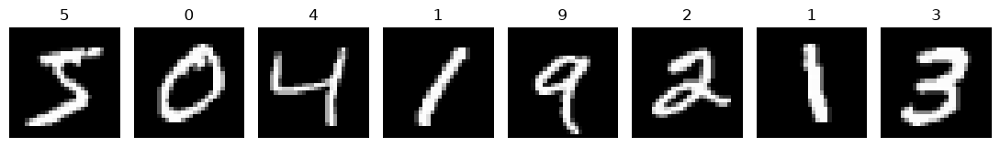
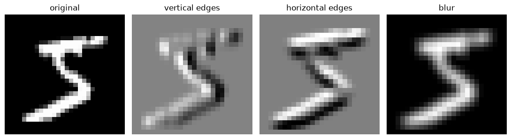
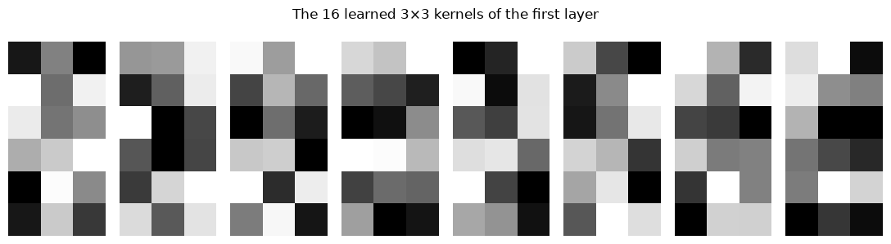
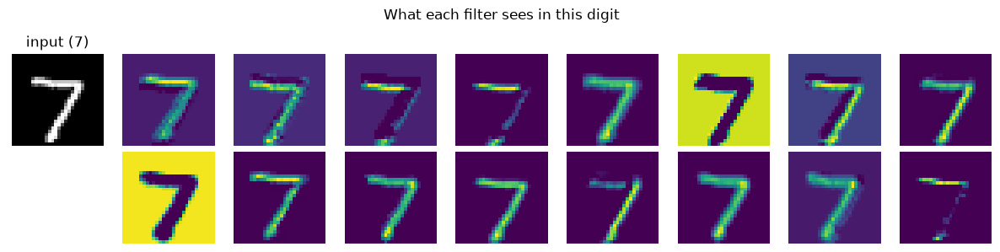
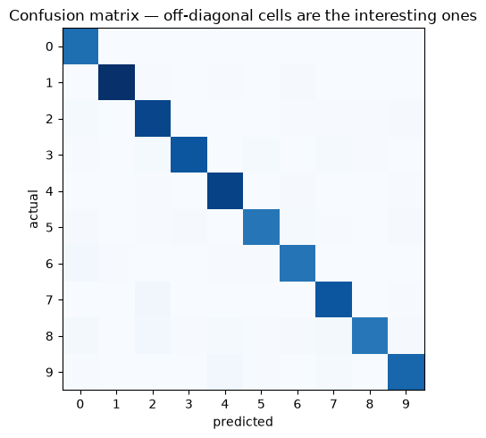

Convolutional Neural Networks
Applied ML in Production · Bonus 2 of 4
Bonus 1 ended with a fully connected network matching logistic regression on tabular data and going no further. This notebook is where neural networks start to earn their reputation — on data where the structure matters and no one wants to hand-engineer features.
An image is not a list of numbers. It is a grid, where neighbouring pixels belong together and a shape means the same thing wherever it appears. A fully connected layer knows none of that. Convolution is the architecture that does.
We build the idea from a single 3×3 kernel applied by hand, then train a small CNN on handwritten digits and look inside it.
How to work through this
Type the code. The convolution loop in section 2 is the one piece worth writing character by character — everything after it is that operation, repeated.
Training takes about ten seconds on a laptop CPU. If the MNIST download is slow the first time, it is cached afterwards.
Learning objectives
After this session you will be able to:
- Explain why a fully connected layer is the wrong shape for an image.
- Implement a 2-D convolution by hand and read the resulting feature map.
- Define kernel, stride, padding, channel, and pooling, and compute output shapes.
- Build and train a CNN in PyTorch with
nn.Conv2dandnn.MaxPool2d. - Compare a CNN against an MLP at an equal parameter budget.
- Visualise learned filters and feature maps.
- Say when to train from scratch and when to fine-tune a pretrained network.
%matplotlib inline
import time
from pathlib import Path
import matplotlib.pyplot as plt
import numpy as np
import torch
import torch.nn as nn
from torch.utils.data import DataLoader, Subset
plt.rcParams.update({"figure.figsize": (9, 4), "axes.grid": False})
torch.manual_seed(0)
np.random.seed(0)
def find_repository_root():
for folder in [Path.cwd(), *Path.cwd().parents]:
if (folder / "data").is_dir():
return folder
raise FileNotFoundError("could not find the repository root")
ROOT = find_repository_root()
print("torch", torch.__version__)
torch 2.13.0
from torchvision import datasets, transforms
DATA_DIR = ROOT / "data" / "torch" # cached after the first run
train_full = datasets.MNIST(root=DATA_DIR, train=True, download=True,
transform=transforms.ToTensor())
test_full = datasets.MNIST(root=DATA_DIR, train=False, download=True,
transform=transforms.ToTensor())
# A subset, so everything in this notebook trains in seconds on a CPU.
train_data = Subset(train_full, range(12_000))
test_data = Subset(test_full, range(2_000))
train_loader = DataLoader(train_data, batch_size=128, shuffle=True)
test_loader = DataLoader(test_data, batch_size=512)
image, label = train_full[0]
print(f"{len(train_data):,} training images, {len(test_data):,} test images")
print(f"one image: {tuple(image.shape)} -> (channels, height, width), label {label}")
12,000 training images, 2,000 test images
one image: (1, 28, 28) -> (channels, height, width), label 5
fig, axes = plt.subplots(1, 8, figsize=(11, 2))
for ax, (picture, digit) in zip(axes, train_full):
ax.imshow(picture[0], cmap="gray")
ax.set_title(str(digit))
ax.axis("off")
plt.tight_layout()
plt.show()

1. Why not just flatten it?
A 28×28 image flattened into 784 numbers can be fed to the network from bonus 1, and it works — we will measure exactly how well. But three things are lost.
Locality. After flattening, the pixel above another pixel is 28 positions away, indistinguishable from any other position. The network has to rediscover that the image is a grid, from data.
Weight sharing. A stroke in the top-left and the same stroke in the bottom-right are different inputs to a dense layer, so each must be learned separately.
Scale. Dense layers grow with the number of pixels.
for pixels, name in [(28 * 28, "MNIST 28×28 grey"),
(224 * 224 * 3, "photo 224×224 colour"),
(1024 * 1024 * 3, "phone camera 1MP colour")]:
dense = pixels * 128
print(f"{name:<26} {pixels:>10,} inputs -> {dense:>14,} weights in one 128-unit dense layer")
print(f"\na 3×3 convolution kernel has 9 weights — and it is reused at every position")
MNIST 28×28 grey 784 inputs -> 100,352 weights in one 128-unit dense layer
photo 224×224 colour 150,528 inputs -> 19,267,584 weights in one 128-unit dense layer
phone camera 1MP colour 3,145,728 inputs -> 402,653,184 weights in one 128-unit dense layer
a 3×3 convolution kernel has 9 weights — and it is reused at every position
That last line is the whole idea. A convolution shares one small set of weights across the entire image, so what it learns in one corner applies everywhere, and the parameter count depends on the kernel, not on the picture.
2. Convolution, by hand
A kernel is a small grid of numbers. Slide it over the image, multiply element-wise, sum, and write the result into an output grid called a feature map.
def convolve(image, kernel):
"""Slide `kernel` over `image` and return the feature map. No padding, stride 1."""
kernel_height, kernel_width = kernel.shape
output_height = image.shape[0] - kernel_height + 1
output_width = image.shape[1] - kernel_width + 1
output = np.zeros((output_height, output_width))
for row in range(output_height):
for column in range(output_width):
patch = image[row:row + kernel_height, column:column + kernel_width]
output[row, column] = (patch * kernel).sum()
return output
digit = train_full[0][0][0].numpy() # a 28×28 array of 0–1 values
vertical_edges = np.array([[-1, 0, 1],
[-2, 0, 2],
[-1, 0, 1]], dtype=float)
horizontal_edges = vertical_edges.T
blur = np.ones((3, 3)) / 9
print(f"image {digit.shape} with a 3×3 kernel -> feature map {convolve(digit, vertical_edges).shape}")
image (28, 28) with a 3×3 kernel -> feature map (26, 26)
fig, axes = plt.subplots(1, 4, figsize=(11, 3))
axes[0].imshow(digit, cmap="gray"); axes[0].set_title("original")
axes[1].imshow(convolve(digit, vertical_edges), cmap="gray"); axes[1].set_title("vertical edges")
axes[2].imshow(convolve(digit, horizontal_edges), cmap="gray"); axes[2].set_title("horizontal edges")
axes[3].imshow(convolve(digit, blur), cmap="gray"); axes[3].set_title("blur")
for ax in axes:
ax.axis("off")
plt.tight_layout()
plt.show()

Three kernels, three different views of the same digit. The first responds where brightness changes left-to-right, the second top-to-bottom, the third averages everything.
Those nine numbers were chosen by hand — they are a classic edge detector. In a CNN, the nine numbers are learned by gradient descent, exactly like any other weight. That is the entire conceptual leap: the network discovers which filters are worth having.
The vocabulary
| Term | Meaning | Effect |
|---|---|---|
| Kernel / filter | The small weight grid, typically 3×3 or 5×5 | What pattern this unit responds to |
| Feature map | The output of one kernel over the whole image | Where in the image that pattern occurs |
| Stride | How far the kernel moves each step | Stride 2 halves the output size |
| Padding | Zeros added round the border | padding=1 with a 3×3 kernel keeps the size unchanged |
| Channels | Inputs stacked in depth — 3 for RGB; one per filter afterwards | A layer with 16 filters outputs 16 channels |
Output size, no padding, stride 1: out = in − kernel + 1. With padding=1
and a 3×3 kernel, out = in. Those two facts cover most architectures you will read.
3. Pooling
After convolution we usually downsample. Max pooling takes the largest value in each small window, which keeps the strongest response and discards where exactly it occurred.
small = np.array([[1, 3, 2, 0],
[4, 6, 1, 2],
[0, 1, 5, 7],
[2, 3, 1, 4]], dtype=float)
pooled = np.array([[small[0:2, 0:2].max(), small[0:2, 2:4].max()],
[small[2:4, 0:2].max(), small[2:4, 2:4].max()]])
print("input 4×4:\n", small.astype(int))
print("\nafter 2×2 max pooling:\n", pooled.astype(int))
print("\nhalf the width, half the height, a quarter of the numbers")
input 4×4:
[[1 3 2 0]
[4 6 1 2]
[0 1 5 7]
[2 3 1 4]]
after 2×2 max pooling:
[[6 2]
[3 7]]
half the width, half the height, a quarter of the numbers
Pooling does two jobs: it cuts computation, and it buys a little translation tolerance — shift the digit by one pixel and the pooled output often does not change. That is why a CNN recognises a 7 wherever it sits in the frame, while a dense network has to learn each position separately.
4. A CNN, and the MLP it has to beat
The standard shape: a few blocks of convolution → ReLU → pooling to build features, then a small dense head to classify them.
We give both networks roughly the same parameter budget, so the comparison is about architecture rather than size.
class MLP(nn.Module):
"""Bonus 1's network, applied to flattened pixels."""
def __init__(self):
super().__init__()
self.net = nn.Sequential(
nn.Flatten(),
nn.Linear(28 * 28, 128), nn.ReLU(),
nn.Linear(128, 10),
)
def forward(self, x):
return self.net(x)
class CNN(nn.Module):
def __init__(self):
super().__init__()
self.features = nn.Sequential(
nn.Conv2d(1, 16, kernel_size=3, padding=1), nn.ReLU(), # 28×28 -> 16 maps of 28×28
nn.MaxPool2d(2), # -> 16 maps of 14×14
nn.Conv2d(16, 32, kernel_size=3, padding=1), nn.ReLU(), # -> 32 maps of 14×14
nn.MaxPool2d(2), # -> 32 maps of 7×7
)
self.classifier = nn.Sequential(
nn.Flatten(),
nn.Linear(32 * 7 * 7, 64), nn.ReLU(),
nn.Linear(64, 10),
)
def forward(self, x):
return self.classifier(self.features(x))
for name, model in [("MLP", MLP()), ("CNN", CNN())]:
print(f"{name}: {sum(p.numel() for p in model.parameters()):,} parameters")
MLP: 101,770 parameters
CNN: 105,866 parameters
def train(model, epochs=5):
optimiser = torch.optim.Adam(model.parameters(), lr=1e-3)
loss_function = nn.CrossEntropyLoss() # expects raw logits and integer labels
started = time.perf_counter()
for epoch in range(epochs):
model.train()
for batch_images, batch_labels in train_loader:
optimiser.zero_grad()
loss = loss_function(model(batch_images), batch_labels)
loss.backward()
optimiser.step()
return time.perf_counter() - started
def accuracy(model):
model.eval()
correct = total = 0
with torch.no_grad():
for batch_images, batch_labels in test_loader:
correct += (model(batch_images).argmax(dim=1) == batch_labels).sum().item()
total += len(batch_labels)
return correct / total
results = {}
for name, model in [("MLP", MLP()), ("CNN", CNN())]:
seconds = train(model)
results[name] = (model, accuracy(model), seconds)
print(f"{name}: accuracy {results[name][1]:.4f} trained in {seconds:.0f}s")
MLP: accuracy 0.9010 trained in 1s
CNN: accuracy 0.9535 trained in 8s
CNN 0.954, MLP 0.901 — at the same parameter count, on the same data, with the same training loop. The difference is entirely the architecture: local kernels reused across the image, instead of one weight per pixel position.
That gap is the reason computer vision moved to convolutions and never moved back (until transformers, which bonus 4 introduces — and which needed far more data to win).
Note also the cost: the CNN took several times longer to train for the same number of epochs. Convolution is more arithmetic per parameter, which is why this field became GPU-shaped.
5. Looking inside
A trained CNN is more inspectable than most neural networks, because its first layer operates directly on pixels.
cnn = results["CNN"][0]
filters = cnn.features[0].weight.detach().numpy() # (16, 1, 3, 3)
fig, axes = plt.subplots(2, 8, figsize=(11, 3))
for index, ax in enumerate(axes.ravel()):
ax.imshow(filters[index, 0], cmap="gray")
ax.axis("off")
plt.suptitle("The 16 learned 3×3 kernels of the first layer")
plt.tight_layout()
plt.show()

Not as tidy as the hand-made edge detector, but the family resemblance is there: light-dark oppositions in various orientations. Gradient descent rediscovered edge detection because edges are what distinguishes digits.
sample_image = test_full[0][0].unsqueeze(0) # (1, 1, 28, 28)
with torch.no_grad():
first_layer = torch.relu(cnn.features[0](sample_image))[0] # 16 feature maps
fig, axes = plt.subplots(2, 9, figsize=(12, 3))
axes[0, 0].imshow(sample_image[0, 0], cmap="gray")
axes[0, 0].set_title(f"input ({test_full[0][1]})")
axes[0, 0].axis("off")
axes[1, 0].axis("off")
for index in range(16):
ax = axes[(index // 8), 1 + index % 8]
ax.imshow(first_layer[index], cmap="viridis")
ax.axis("off")
plt.suptitle("What each filter sees in this digit")
plt.tight_layout()
plt.show()

Each panel shows where that filter's pattern occurs. Some fire on the upper stroke, some on the left edge, some barely at all. Deeper layers combine these into parts, and parts into digits — the standard story of edges → textures → parts → objects, which holds up remarkably well on real photographs too.
6. Error analysis, session 6 style
Aggregate accuracy hides which digits the model confuses. The same slice discipline applies here.
from sklearn.metrics import confusion_matrix
predictions, truths = [], []
cnn.eval()
with torch.no_grad():
for batch_images, batch_labels in test_loader:
predictions.append(cnn(batch_images).argmax(dim=1))
truths.append(batch_labels)
predictions = torch.cat(predictions).numpy()
truths = torch.cat(truths).numpy()
matrix = confusion_matrix(truths, predictions)
per_digit = matrix.diagonal() / matrix.sum(axis=1)
print("accuracy by digit:")
for digit, score in enumerate(per_digit):
print(f" {digit}: {score:.3f}", " <- weakest" if score == per_digit.min() else "")
fig, ax = plt.subplots(figsize=(6, 5))
ax.imshow(matrix, cmap="Blues")
ax.set_xlabel("predicted"); ax.set_ylabel("actual")
ax.set_xticks(range(10)); ax.set_yticks(range(10))
ax.set_title("Confusion matrix — off-diagonal cells are the interesting ones")
plt.tight_layout()
plt.show()
accuracy by digit:
0: 1.000
1: 0.983
2: 0.963
3: 0.947
4: 0.982
5: 0.939
6: 0.949
7: 0.956
8: 0.870 <- weakest
9: 0.938

The weakest digit is 8, and the off-diagonal cells are the pairs a person would also hesitate over — 4 against 9, 3 against 5, 8 against 3, 7 against 2. That is reassuring: a model whose mistakes look nothing like human mistakes usually has a data problem rather than a capacity problem.
In a real project this table is where you decide what to do next: collect more examples of the weak class, add augmentation that targets the confusion, or accept it and document it.
7. What real image projects add
Our ten-second CNN skips four things that matter in practice.
Data augmentation. Randomly shift, rotate, crop or flip training images so the
network sees more variation than you collected. In torchvision this is a
transform: transforms.RandomAffine(degrees=10, translate=(0.1, 0.1)). It is the
cheapest accuracy you will ever buy — but only apply it to the training set, for
exactly the reason session 2 gave.
Normalisation. Scale pixels to roughly zero mean and unit variance
(transforms.Normalize). The same lesson as bonus 1's tabular features.
Transfer learning. Almost nobody trains an image model from scratch. You take a network already trained on millions of photographs — ResNet, EfficientNet, a vision transformer — replace its final layer, and fine-tune on your few thousand images. It is usually a 10-line change and it routinely beats anything you could train from nothing.
from torchvision import models
model = models.resnet18(weights="IMAGENET1K_V1")
for parameter in model.parameters():
parameter.requires_grad = False # freeze the learned features
model.fc = nn.Linear(model.fc.in_features, n_classes) # new head, trained on your data
Hardware. Our subset trains on a laptop. A real dataset at photograph
resolution wants a GPU; model.to("cuda") — or "mps" on Apple silicon — and the
same loop.
| Situation | What to do |
|---|---|
| A few hundred images | Fine-tune a pretrained model, freeze most layers |
| A few thousand | Fine-tune more layers, augment heavily |
| Hundreds of thousands, unusual domain | Train from scratch |
| Images plus tabular data | Two branches, concatenated before the head |
Your turn
1. Kernel design. Build a 3×3 kernel that detects diagonal strokes and apply
it with convolve to a few digits. Which digits respond most strongly?
2. Shape arithmetic. Without running anything, work out the output shape after
Conv2d(1, 8, kernel_size=5) then MaxPool2d(2) on a 28×28 input. Then check
with model.features(sample_image).shape.
3. Remove the pooling. Delete both MaxPool2d layers from the CNN, adjust the
first Linear accordingly, and retrain. What happens to the parameter count,
training time, and accuracy?
4. Augment. Add transforms.RandomAffine(degrees=10, translate=(0.1, 0.1)) to
the training transform only, retrain, and compare. Why must the test transform
stay unchanged?
5. One epoch, more data. Train the CNN on all 60,000 images for one epoch instead of 12,000 for five. Which is better for the same amount of compute?
6. Find the hard cases. Pull out the ten test images the CNN got most confidently wrong (highest softmax probability on the wrong class) and display them. Would you have got them right?
If you remember nothing else
A dense layer throws away the grid. Flattening destroys locality, forces the network to relearn every pattern at every position, and explodes the parameter count.
Convolution is a small set of shared weights slid across the input. Nine numbers, reused everywhere, learned by gradient descent.
Pooling downsamples and buys translation tolerance.
Architecture beat size here. CNN 0.964 against MLP 0.907 at equal parameters and equal training budget.
First-layer filters are readable. The network rediscovered edge detectors, and the confusion matrix shows human-shaped mistakes — both are signs of health.
In practice, fine-tune rather than train from scratch. A pretrained backbone plus a new head beats a small custom network almost every time.
Glossary
| Term | Meaning |
|---|---|
| Kernel / filter | The small learned weight grid slid across the input |
| Feature map | One kernel's output over the whole input |
| Stride | Step size of the slide |
| Padding | Border zeros that preserve output size |
| Channel | Depth dimension — 3 for RGB, one per filter thereafter |
| Receptive field | The region of the input one output value depends on |
| Weight sharing | Reusing the same kernel at every position |
| Pooling | Downsampling by taking the max or mean of a window |
| Translation invariance | Recognising a pattern regardless of where it appears |
| Data augmentation | Synthetic training variation — shifts, rotations, crops |
| Transfer learning | Reusing a pretrained network and retraining part of it |
| Backbone / head | The feature extractor and the task-specific final layers |
Further reading
- Stanford CS231n, Convolutional Neural Networks for Visual Recognition — the course notes on convolution and pooling remain the best explanation available.
- PyTorch tutorial, Training a classifier — the CIFAR-10 version of this notebook.
torchvision.modelsdocumentation — the pretrained backbones worth fine-tuning.- Zeiler and Fergus, Visualizing and Understanding Convolutional Networks (2014) — where the layer-by-layer feature visualisations in section 5 come from.
Next: Recurrent Networks — RNN, LSTM and GRU — what to do when the input is a sequence and order carries the meaning.